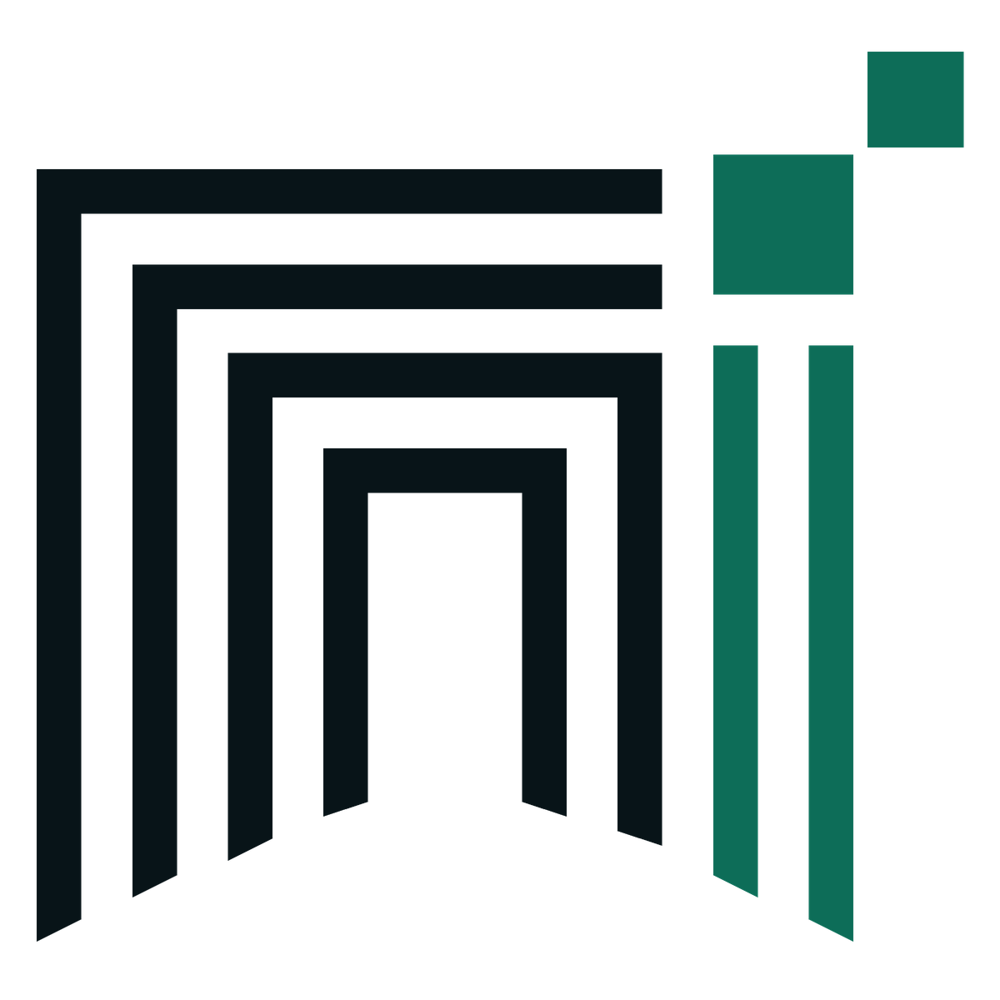

Ewan Software
دليل الهوية البصرية
الشعار
أربع بوابات متداخلة تتبع خط منظور واحد. المربّعان الزمرديان في أعلى العلامة يربطان شكل الإيوان بالبنية الرقمية.
إيوانللبرمجياتEWAN SOFTWARE

إيوانللبرمجياتEWAN SOFTWAREاستخدم العلامة وحدها في الأيقونات والعناوين الصغيرة. اترك حولها فراغًا لا يقل عن عرض المربّع الزمردي الأكبر. الحد الأدنى المقترح للشاشة 24 بكسل للعلامة و120 بكسل للشعار الكامل.
الألوان
الحبري
#081418الخلفية الأساسيةالتيلي الداكن
#0D2E30السطوح الداكنةالزمردي
#0D6D58طبقات ورسوماتاليشمي
#59B39Dتفاصيل الرسوماتالنعناعي
#A3DECEالأزرار والروابطالزمردي المضيء
#4FE0B0التفاعل ومربّعات الشعارالأبيض البارد
#EFF7F5العناوين والشعارالنص الأبيض البارد للعناوين على الخلفيات الداكنة، والنص الحبري على الأزرار النعناعية. الزمردي يؤدّي دورًا بصريًا في الرسومات والسطوح.
الخطوط
Thmanyah Sans + Serif Display
برمجيات بإتقان. أعمال بانسياب.
سانس ٤٠٠ و٥٠٠ للنصوص، وسيرف ديسبلاي ٧٠٠ للعناوينInter + DM Serif Display
Built with care. Made to flow.
Inter for body text. DM Serif Display for headings; TAN Headline can replace it with a webfont license.ملفات الشعار
الشعار الكامل للخلفيات الداكنة
الشعار الكامل للخلفيات الفاتحة
العلامة للخلفيات الداكنة
العلامة للخلفيات الفاتحة


كل الملفات بصيغة PNG شفافة.